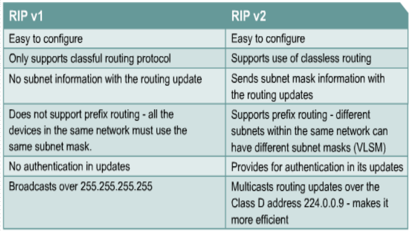
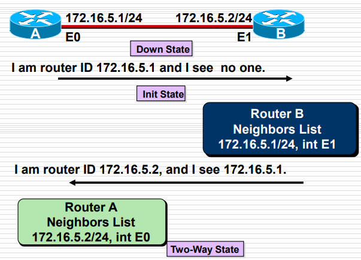
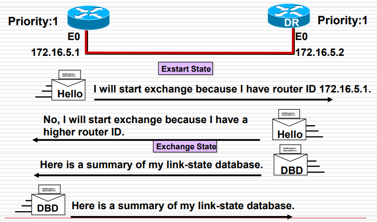

本文主要参考自EagleBear2002的博客
路由协议
1、 RIP协议
RIPv1
一种内部网关协议（interior gateway protocol），向每个邻居路由器广播路由表，默认间隔30秒，最初在RFC-1058中定义
- 使用跳数作为度量标准（每经过一个路由器就+1），最大为15（达到16时相当于不可达）
- 能够在多达6个等价路径上达到负载平衡，默认为4个。
**负载平衡：**尽可能将网络流平均分发到多个节点，需要满足各个路径跳数相同。
限制：
- 不支持VLSM或CIDR（因为不会在更新中发送子网信息）
- 不支持身份验证（只要接入网络就可以启动RIP并获取到整个网路的拓扑）
RIPv2
是RIPV1的改进版本，新增以下功能：
- 使用跳数指标的距离向量协议
- 使用抑制计时器（holddown timers）、水平分割（split horizon）、防止路由循环，默认180秒（交换时间的6倍）
- 使用16跳表示无限距离
V1和V2的区别

- 支持有类路由（可以携带子网掩码）
- 使用组播地址进行发送广播，给特定接收方接收
- 需要身份认证决定是否继续进行接收
2、OSPF协议
开放最短路径优先协议
- 基于开放标准的链路状态协议（对比RIP使用的是距离向量协议）
- 定义在RFC-2328中（已经不是最新的了，）
- 首选的 IGP 协议，因为具有可伸缩性，与RIP相比优势较大
路由信息
- 链路状态表示的是对接口的描述以及与相邻路由器的关系
- 集合形成一个链路状态数据库（link-state database），或者拓扑数据库（topological database）
- 使用最短路径优先算法Dijkstra shortest path first (SPF)，选择最佳路径并放在路由表中
OSPF与RIP的差别
OSPF:用于大型网络，基于带宽，可以将网络分成不同区域(area)，支持VLSM，支持多路负载平衡
OSPF特征
- 更健壮，更具有可扩展性
- 可以将大的网络分成多个area，每个area只和 area 0 相连，保证 area 没有回路
- 层次最多只要两个
OSPF术语
- 连接（Link）：两个设备之间的物理链路
- 链路状态（Link-State）：物理链路的信息，包括路由器连接关系、通过什么接口、链路带宽、网络类型（点对点、多路复用）等
- 代价/费用（cost）不同网络链路理的时候的代价，和链路带宽相关，成反比关系，一般是固定值除以带宽
- 区域（area）：有相同区域号的网段和端口，一个区域内的路由器有相同的链路状态（注意是一个端口指定一个area）
- 自治系统（As）：多个area形成一个自治系统
- Neighbours必须在一个Area中，它们之间交换拓扑数据库，当中存的是链路状态
- 一个area中获得全部 Link-State 后计算 Tree，生成表。
路由器中有三种数据库：相邻路由器数据库（存储相邻路由器）、拓扑数据库（存储所有路由器）、路由表（存储最佳路由）
- 指定路由器（DR）：被选举出来，代表区域中的所有路由器
- 备用指定路由器（BDR）：如果 DR 损坏，BDR 立即成为 DR，目的是提高交换效率。
一个区域有且仅有一个DR和BDR
OSPF域
一个域由32位组成，可以写作IP或十进制数的格式（Area 0 或Area 0.0.0.0）
- area 0表示主干区域
- 使用两级分层模型，多区域OSPF中所有区域都必须连接到主干区域0（且只与Area0相连）

OSPF行为：
OSPF的操作包含5个步骤：
- 建立邻接关系
- 选择DR和BDR（多路复用中使用）
- 发现路线
- 选择合适的路线
- 维护路由信息
OSPF七个状态：
- 初始化（Init）
- 双向操作（2Way）
- 预先启动（Ex Start）
- 交换（Exchange）
- 加载（Loading）
- 完成（Full）
最短路径算法SPF：
- 使用某个节点作为起点，检查相邻节点来计算无环拓扑（就是数据结构中的算法）
DR和BDR
OSPF网路类型
- 广播多路复用网络，例如以太网
- 点对点网络
- 非广播多路复用网络（NBMA，Non-broadcast multi-access）
DR选举仅用于多路复用的网络（BMA\NBMA），例如BMA（以太网、Token Ring、FDDI），以及NBMA（Frame Relay，X25，SMDS），对于点对点或点对多则不使用（PPP,HDLC、管理员配置等）
为什么要选择DR/BDR？
- 减少节点之间的连接。如果由5个路由器，不使用DR/BDR就要建立4*5/2 = 10个连接。而使用之后则只需要建立5-1 = 4个连接
- DR可以作为一个“中转”来进行链路状态更新，区域内的其他路由器都可以连接到DR。
OSPF报文
一共有五种报文：
- Hello问候报文：用于发现和维持邻站的可达性
- Database Description数据库描述报文（DBD）：向邻站给出自己的链路状态摘要信息
- Link-State Request链路状态请求报文（LSR）：向对方请求发送某些链路状态项目的详细信息
- Link-State Update链路状态更新报文(LSU)：用泛洪法对全网更新链路状态
- Link-State Acknowledgement链路状态确认报文(LSAck)：对链路更新分组的确认
OSPF一些机制
1、Hello协议：当路由器打开OSPF进程时每隔一段时间就会发送，使用IP地址为224.0.0.5，默认每10秒发送一次（连接到NBMA网段上的则是每30秒发送一次）Hello 几乎是空报文，用于确认邻站的可达性。
Hello的Type字段为1

2、DR、BDR选举
选择DR标准：
- 首先把优先级（priority）作为标准。优先级越高，权重越高。当优先级相同时把RouterID作为标准。RouterID越高，权重越高。
- 优先级：范围在1-255之间，默认值为1.如果优先级为0则不参与DR选举
- RouterID：如果有环回接口（lo0等端口），就将该端口IP作为RouterID；否则就将物理接口上的最高IP作为RouterID（必须是活跃接口）（注意：环回接口只要你配置了，并且路由器是开的，那么环回接口就一直是active的）
- 在以上标准下，DR选择的是权重最高的，BDR是权重第二高的。
3、信息交换发现路线
以路由器A与路由器B为例：

- 首先在最初都处于Down状态，A需要发送hello报文，让B收到。
- hello报文的TTL为1，因此不会跨路由器传播，收到即丢弃
- 收到后,B也会发送Hello报文，然后A收到后进入Two Way 状态

- 准备交换数据库（Exstart Starts）。首先选出RouterID高的一方，发送自己的数据库描述DBD报文，另一方接收处理，同时自己也发送自己的DBD报文

- 交换完成后，分别检查自己有没有全部的信息
- 如果有完整的信息则发送LSAck链路状态确认报文
- 如果缺失了部分信息，那么发送LSR链路状态请求报文，然后等待对方发送LSU链路状态更新报文，收到后也发生LSAck
- 完成之后就进入了Full State状态
OSPF总体流程
五大步骤（上文提过）：
- 建立邻接关系
- 选择DR和BDR（多路复用中使用）
- 发现路线
- 选择合适的路线
- 维护路由信息
1、建立邻接关系
关键词：Hello数据包
- 初始处于down状态
- 然后进入Init状态，路由器每隔一段时间发送Hello数据包，如果邻居发现了就将邻居添加到自己的邻居数据库。
- 然后根据不同条件判断是否进入第二步：如果多路复用，并且DR/BDR字段未被占用（当前网络尚未存在DR/BDR），就进入Two-Way状态并进入第二步；否则（是点对点或点对多网络，或者DR/BDR字段已被占用）就跳过步骤2，直接进入步骤3
2、选举DR和BDR
进入Exstart状态，并使用之前讲过的DR/BDR选举的方式来选举DR/BDR
- 注意：已经确定的DR和BDR是不会更改的，就算有新的优先级更高的路由器加入。除非原有的DR失败（故障）
3、发现路线
这一步需要从Exstart状态转换到Full状态。
- 首先进入Exchange状态，开始交换数据库，按照上文讲过的方法
- 然后进入LoadingState状态，开始补充各自缺失的信息，还是上文提过的方法。
- 交换完成就进入了Full State状态
4、选择适当的路线
网络上所有其他路由器需要并行计算出最小生成树，使用SPF算法
- 计算前提是所有路由器拥有相同的链路状态数据库
- OSPF在计算完后在路由表中安装成本最低的路径，最多将安装 4 条等价路径以进行负载共享
5、维护路由信息
进行常规的Hello交换来检测邻居的状态，可达性
- 网络类型不同时，Hello数据包的发送间隔也不同（速度为T1（1.544Mbps）使用10秒间隔；小于T1则使用30秒间隔）
6、链路状态出现变化

- 假如A的链路发生了变化，那么A就使用224.0.0.6告知其他路由器的DR
- DR收到后，使用224.0.0.5告知其他所有其他路由器
- 如果路由器B连接到了其他area，则继续进行交换
- 信息交换完毕后就更新路由表
OSPF配置
1、启动OSPF：router ospf [process-id]
- process-id表示
- 通常在整个 AS（自治系统）中保持相同的进程 ID（虽然不同应该影响不大）
2、识别IP网络并将网段纳入OSPF中：network [address] [wildcardmask] area [area-id]
- area即区分了主干区域与其他区域
- wildcardmask与子网掩码相反，为0表示如果IP想要符合要求，每一位必须与属于这个address中对应的位相等，为1的为表示不考虑这位（这位任意都可）
3、配置环回地址：interface [loopback number]
- 环回接口比如lo0，它会决定主从关系并涉及到DR的选举
- 需要使用32位子网掩码
- 配置时（也就是输入完这段命令后）自动启动并生效，无需no shutdown
4、修改OSPF优先级：ip ospf priority [number]
- 优先级为0表示不参与选举
- 查看OSPF端口使用命令show ip ospf [interface type number]
5、修改ospf路径costip ospf cost [number]
- 在config-if模式下输入
- number在1-65535之间
- 连接到相同链路上的接口必须拥有相同的cost，不然这条链路会被视为关闭
- 思科路由器默认serial链路（串行链路）的成本为1784
- 如果一个链路比默认速度更低，你需要将其重新设置为它真实的速度，使用命令：
bandwidth [number](单位Kbps)
6、设置OSPF计时器
- OSPF区域中的所有路由器必须拥有相同的Hello间隔和死间隔（具体数值看上文）
命令：ip ospf hello-interval [seconds]
ip ospf dead-interval [seconds]